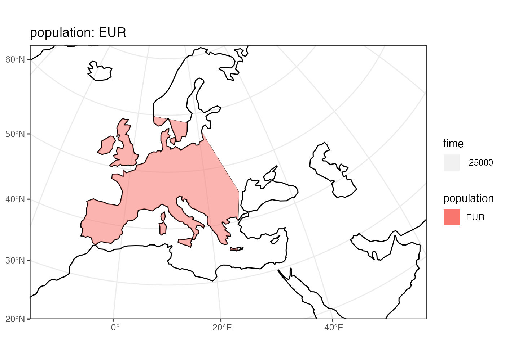
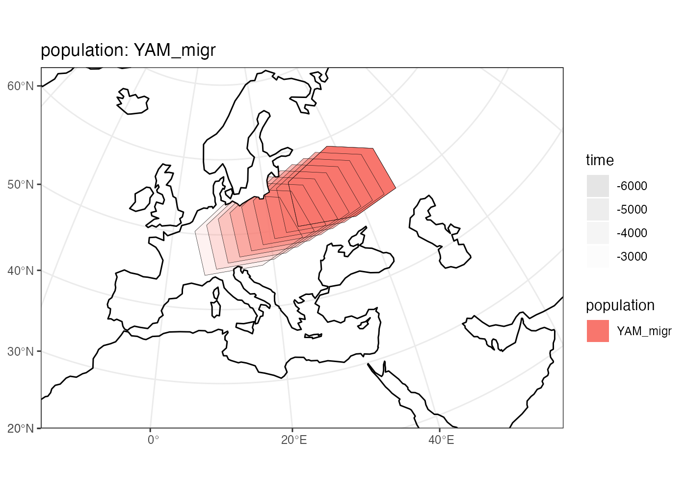

A full example of a spatial population model
Martin Petr
example.RmdDefine the world context
world <- world_map(
xrange = c(-15, 60), # min-max longitude
yrange = c(20, 65), # min-max latitude
crs = "EPSG:3035" # real projected CRS used internally
)
#> OGR data source with driver: ESRI Shapefile
#> Source: "/private/var/folders/hr/_t1b0f5n7c76yrfsg8yk9l100000gn/T/RtmpT4rWvR", layer: "ne_110m_land"
#> with 127 features
#> It has 3 fields
plot(world)
Define some useful geographic regions
africa <- region(
"Africa", world,
coords = list(
c(-18, 20), c(40, 20), c(30, 33),
c(20, 32), c(10, 35), c(-8, 35)
)
)
europe_anatolia <-region(
"Western Europe & Anatolia", world,
coords = list(c(-10, 35), c(-5, 35), c(10, 38), c(20, 35), c(38, 35),
c(40, 40), c(30, 45), c(20, 58), c(-5, 60), c(-15, 50))
)
europe <- region(
"Western Europe", world,
coords = list(c(-8, 35), c(-5, 36), c(10, 38), c(20, 35), c(25, 35),
c(28, 45), c(20, 58), c(-5, 60), c(-15, 50))
)
anatolia <- region(
"Anatolia", world,
coords = list(c(28, 35), c(40, 35), c(42, 40),
c(30, 43), c(27, 40), c(25, 38))
)Define population dynamics
afr <- population(
"AFR", parent = "ancestor", Ne = 1000,
world = world, region = africa
)
plot(afr)
afr
#> spammr 'population' object
#> --------------------------
#> name: AFR
#> split from: [this is an ancestral population]
#> removed at: [will not be removed]
#> snapshots:
#> # time Ne map
#> 1 Inf 1000 new
#>
#> projected CRS: ETRS89-extended / LAEA Europe
ooa <- population(
"OOA", parent = afr, time = 51000, Ne = 200,
center = c(30, 30), radius = 300, remove = 27000
) %>% migrate(
trajectory = list(c(40, 30), c(50, 30), c(60, 40), c(70, 40)),
start = 50000,
end = 40000,
snapshots = 30
)
plot(ooa)
ooa
#> spammr 'population' object
#> --------------------------
#> name: OOA
#> split from: AFR
#> split time: 51000
#> removed at: 27000
#> snapshots:
#> # time Ne map
#> 1 51000.00 200 new
#> 2 50000.00 200 new
#> 3 49677.42 200 new
#> 4 49354.84 200 new
#> 5 49032.26 200 new
#> 6 48709.68 200 new
#> 7 48387.10 200 new
#> 8 48064.52 200 new
#> 9 47741.94 200 new
#> 10 47419.35 200 new
#> 11 47096.77 200 new
#> 12 46774.19 200 new
#> 13 46451.61 200 new
#> 14 46129.03 200 new
#> 15 45806.45 200 new
#> 16 45483.87 200 new
#> 17 45161.29 200 new
#> 18 44838.71 200 new
#> 19 44516.13 200 new
#> 20 44193.55 200 new
#> 21 43870.97 200 new
#> 22 43548.39 200 new
#> 23 43225.81 200 new
#> 24 42903.23 200 new
#> 25 42580.65 200 new
#> 26 42258.06 200 new
#> 27 41935.48 200 new
#> 28 41612.90 200 new
#> 29 41290.32 200 new
#> 30 40967.74 200 new
#> 31 40645.16 200 new
#> 32 40322.58 200 new
#> 33 40000.00 200 new
#>
#> projected CRS: ETRS89-extended / LAEA Europe
ehg <- population(
"EHG", time = 28000, Ne = 400, parent = ooa,
world,
coords = list(
c(26, 55), c(38, 53), c(48, 53), c(60, 53),
c(60, 60), c(48, 63), c(38, 63), c(26, 60)
),
remove = 6000
)
plot(ehg)
ehg
#> spammr 'population' object
#> --------------------------
#> name: EHG
#> split from: OOA
#> split time: 28000
#> removed at: 6000
#> snapshots:
#> # time Ne map
#> 1 28000 400 new
#>
#> projected CRS: ETRS89-extended / LAEA Europe
eur <- population(
name = "EUR", time = 25000, Ne = 300, parent = ehg,
world, region = europe
)
plot(eur)
eur
#> spammr 'population' object
#> --------------------------
#> name: EUR
#> split from: EHG
#> split time: 25000
#> removed at: [will not be removed]
#> snapshots:
#> # time Ne map
#> 1 25000 300 new
#>
#> projected CRS: ETRS89-extended / LAEA Europe
ana <- population(
name = "ANA", time = 28000, Ne = 800, parent = ooa,
world, center = c(34, 38), radius = 700,
region = anatolia, remove = 6000
) %>% expand(
by = 2500,
start = 10000,
end = 7000,
snapshots = 10,
region = europe_anatolia
)
plot(ana)
ana
#> spammr 'population' object
#> --------------------------
#> name: ANA
#> split from: OOA
#> split time: 28000
#> removed at: 6000
#> snapshots:
#> # time Ne map
#> 1 28000 800 new
#> 2 10000 800 new
#> 3 9700 800 new
#> 4 9400 800 new
#> 5 9100 800 new
#> 6 8800 800 new
#> 7 8500 800 new
#> 8 8200 800 new
#> 9 7900 800 new
#> 10 7600 800 new
#> 11 7300 800 new
#> 12 7000 800 new
#>
#> projected CRS: ETRS89-extended / LAEA Europe
yam <- population(
name = "YAM", time = 7000, Ne = 600, parent = ehg,
world, coords = list(
c(26, 50), c(38, 49), c(48, 50),
c(48, 56), c(38, 59), c(26, 56)
),
remove = 2000
)
plot(yam)
yam
#> spammr 'population' object
#> --------------------------
#> name: YAM
#> split from: EHG
#> split time: 7000
#> removed at: 2000
#> snapshots:
#> # time Ne map
#> 1 7000 600 new
#>
#> projected CRS: ETRS89-extended / LAEA Europe
yam_migr <- population(
name = "YAM_migr", time = 6000, Ne = 1000, parent = yam,
world, coords = list(
c(26, 50), c(38, 49), c(48, 50),
c(48, 56), c(38, 59), c(26, 56)
),
remove = 2900
) %>%
migrate(
trajectory = c(15, 50),
start = 5000,
end = 3000,
snapshots = 8
)
plot(yam_migr)
yam_migr
#> spammr 'population' object
#> --------------------------
#> name: YAM_migr
#> split from: YAM
#> split time: 6000
#> removed at: 2900
#> snapshots:
#> # time Ne map
#> 1 6000 1000 new
#> 2 5000 1000 new
#> 3 4750 1000 new
#> 4 4500 1000 new
#> 5 4250 1000 new
#> 6 4000 1000 new
#> 7 3750 1000 new
#> 8 3500 1000 new
#> 9 3250 1000 new
#> 10 3000 1000 new
#>
#> projected CRS: ETRS89-extended / LAEA Europe
Compile the whole model and load it in SLiM
compile(
maps = list(afr, ooa, ehg, eur, ana, yam, yam_migr),
admixtures = admixtures,
output_dir = "/tmp/test-model/",
overwrite = TRUE
)
run_slim(
model_dir = "/tmp/test-model/",
gen_time = 30, burnin = 200, sim_length = 70000,
interaction = 30, spread = 20, seq_length = 100, recomb_rate = 0
)
animate(
locations = "model/output_locations.tsv.gz",
gif = "model/output_anim.gif",
gen_time = 30,
nframes = 200
)